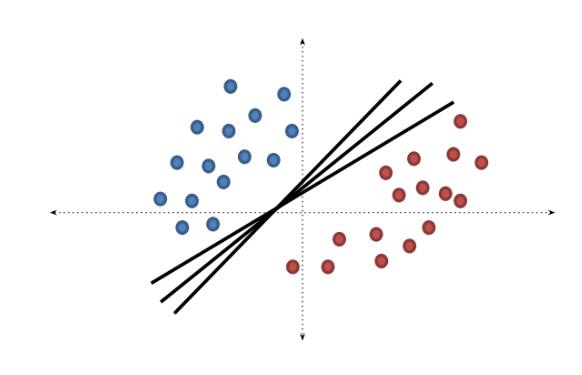

K-Nearest Neighbors, Support Vector Machine, and Bayesian Classifier
K-Nearest Neighbors
Pendahuluan
K-Nearest Neighbors (KNN) adalah algoritma supervised learning yang sederhana namun powerful untuk klasifikasi dan regresi.
KNN bekerja berdasarkan prinsip bahwa objek yang serupa cenderung berada di ruang fitur yang berdekatan (proximity principle).
KNN adalah algoritma non-parametrik dan instance-based learning, dimana model tidak “dilatih” dalam arti tradisional, melainkan langsung menggunakan data training sebagai model.
Dalam klasifikasi, prediksi didasarkan pada voting mayoritas dari K tetangga terdekat, sedangkan dalam regresi, prediksi adalah rata-rata nilai K tetangga terdekat.
Parameter utama adalah K (jumlah tetangga terdekat) yang menentukan seberapa banyak tetangga yang diperhitungkan untuk membuat keputusan.
Kelebihan KNN: mudah dipahami, tidak memerlukan asumsi distribusi data, dan efektif untuk dataset berukuran kecil hingga menengah.
Keterbatasan: komputasi intensif untuk dataset besar, sensitif terhadap fitur yang tidak relevan, dan memerlukan normalisasi data.
Prinsip Dasar KNN
KNN adalah algoritma klasifikasi dan regresi yang menyimpan semua data training (lazy learning), mengklasifikasi data baru berdasarkan kesamaan/jarak dengan data training, mencari K tetangga terdekat dari data testing, dan menentukan label berdasarkan voting mayoritas (untuk klasifikasi) atau rata-rata (untuk regresi)
Prinsip Kerja KNN
Dalam KNN, prediksi untuk data baru \(x\) dapat diformulasikan sebagai:
Regression
Classification
Mean/Average:
Majority Vote:
\[f(x) = \frac{1}{n} \sum_{i=1}^{n} y_i\]
\[f(x) = \frac{1}{n} \sum_{i=1}^{n} I(y_i=1)\]
Untuk regresi: Prediksi adalah rata-rata dari nilai target tetangga terdekat.
Untuk klasifikasi: Prediksi ditentukan berdasarkan voting mayoritas, di mana \(I(y_i=1\)) adalah fungsi indikator yang bernilai 1 jika kondisi terpenuhi.
Quiz
Pertanyaan:
Jika kita ingin memprediksi kelas dari titik data baru \(?\) menggunakan algoritma K-Nearest Neighbors, termasuk ke kelas A atau B-kah titik tersebut jika kita menggunakan \(K=3\) dan \(K=7\)? Jelaskan alasan dan proses penentuannya!
Metrik Jarak pada KNN
Metrik jarak sangat penting dalam KNN karena menentukan “kedekatan” antar sampel. Beberapa metrik jarak yang umum digunakan:
Metrik jarak yang dipilih dapat memengaruhi kinerja model KNN secara signifikan tergantung pada karakteristik data.
Metrik Jarak pada KNN
Pemilihan Nilai K
Pemilihan nilai K sangat krusial dalam KNN:
K terlalu kecil: Model sensitif terhadap noise (overfitting)
K terlalu besar: Model menjadi terlalu umum (underfitting)
Beberapa pendekatan untuk memilih K: - Uji coba beberapa nilai K dan pilih yang memberikan performa terbaik pada validasi - Aturan praktis: K = √n (n adalah jumlah sampel) - K sebaiknya bilangan ganjil untuk klasifikasi biner (menghindari tie votes)
Gambar: Efek nilai K terhadap boundary keputusan. K=1 dan K=5
Feature Scaling dan Normalisasi
KNN sangat sensitif terhadap skala fitur! Fitur dengan skala lebih besar akan mendominasi perhitungan jarak.
Mengapa perlu normalisasi? - Contoh: Pada fitur usia (20-70) dan pendapatan (10.000-100.000), perbedaan pendapatan akan mendominasi perhitungan jarak
Support Vector Machine (SVM) adalah algoritma supervised learning yang powerful untuk klasifikasi.
SVM bekerja dengan prinsip menemukan hyperplane optimal yang memisahkan kelas-kelas data dengan margin maksimal.
SVM adalah algoritma parametrik yang bertujuan untuk menemukan batas keputusan (decision boundary) yang memaksimalkan jarak antara kelas-kelas.
SVM dapat menangani masalah klasifikasi linear maupun non-linear melalui penggunaan fungsi kernel.
Parameter utama dalam SVM adalah C (parameter regularisasi) yang mengontrol trade-off antara margin yang lebar dan kesalahan klasifikasi, serta parameter kernel.
Kelebihan SVM: efektif pada ruang berdimensi tinggi, robust terhadap overfitting terutama dalam klasifikasi teks dan gambar.
Keterbatasan: kurang efisien untuk dataset besar, pemilihan kernel dan parameter yang tepat bisa menjadi tantangan.
Prinsip Dasar SVM
SVM bertujuan untuk menemukan hyperplane optimal yang memisahkan data dari kelas berbeda dengan margin maksimal. Support vectors adalah data points yang berada di tepi margin dan menentukan posisi hyperplane. SVM dapat menangani data yang tidak dapat dipisahkan secara linear melalui transformasi ke dimensi yang lebih tinggi menggunakan fungsi kernel.
Prinsip Dasar SVM
1 dimensi/variabel
2 dimensi/variabel
3 dimensi/variabel
Untuk >3 dimenasi/variabel, tidak dapat divisualisasikan, tetapi prinsipnya sama.
Prinsip Dasar SVM

Tugas kita adalah mencari hyperplane yang memisahkan data dari kelas yang berbeda dengan margin maksimal.
Prinsip Kerja SVM
Dalam SVM, hyperplane dapat diformulasikan sebagai:
\[f(x) = w^T x + b\]
Dimana: \(w\) adalah vektor bobot (normal terhadap hyperplane), \(b\) adalah bias, dan \(x\) adalah vektor fitur input Untuk masalah klasifikasi biner.
Prediksi dapat diformulasikan sebagai:
\[\text{class} = \text{sign}(w^T x + b)\]
Tujuan SVM adalah memaksimalkan margin antara hyperplane dan support vectors:
\[\text{Maximize } \frac{2}{||w||} \text{ subject to } y_i(w^T x_i + b) \geq 1 \text{ for all } i\]
Fungsi Kernel dalam SVM
Kernel memungkinkan SVM bekerja di ruang dimensi yang lebih tinggi tanpa menghitung transformasi secara eksplisit (kernel trick).
Linear Kernel \[K(x_i, x_j) = x_i^T x_j\] - Paling sederhana - Efektif untuk data yang dapat dipisahkan secara linear
Polynomial Kernel \[K(x_i, x_j) = (x_i^T x_j + c)^d\] - Parameter: derajat \(d\) dan konstanta \(c\) - Baik untuk data dengan pola non-linear sederhana
Radial Basis Function (RBF) Kernel \[K(x_i, x_j) = \exp(-\gamma ||x_i - x_j||^2)\] - Parameter: \(\gamma\) mengontrol pengaruh satu sampel - Sangat efektif untuk berbagai jenis data non-linear - Default di sebagian besar implementasi SVM
Sigmoid Kernel \[K(x_i, x_j) = \tanh(\alpha x_i^T x_j + c)\] - Mirip dengan fungsi aktivasi pada neural network
Fungsi Kernel dalam SVM
Parameter C dan Margin
Parameter C dalam SVM mengontrol trade-off antara margin yang lebar dan kesalahan klasifikasi:
C kecil: Margin lebih lebar, lebih toleran terhadap kesalahan klasifikasi (mungkin underfitting)
C besar: Margin lebih sempit, kurang toleran terhadap kesalahan klasifikasi (mungkin overfitting)
Pemilihan parameter C yang tepat biasanya dilakukan melalui cross-validation.